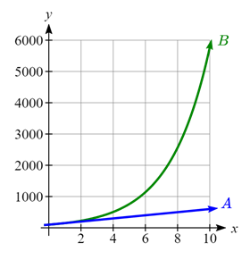
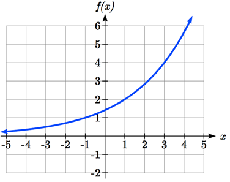

India is the second most populous country in the world, with a population in 2008 of about 1.14 billion people. The population is growing by about 1.34% each year . We might ask if we can find a formula to model the population, \(P\text{,}\) as a function of time, \(t\text{,}\) in years after 2008, if the population continues to grow at this rate.
In linear growth, we had a constant rate of change - a constant number that the output increased for each increase in input. For example, in the equation \(f(x)=3x+4\text{,}\) the slope tells us the output increases by three each time the input increases by one. This population scenario is different - we have a percent rate of change rather than a constant number of people as our rate of change.
To see the significance of this difference, consider these two companies:
Company Ahas 100 stores, and expands by opening 50 new stores every year.
Company B has 100 stores and expands by increasing the number of stores by 50% of their total each year.
Looking at a few years of growth for these companies:
Year
Company A stores
Company B stores
0
\(100\)
\(100\)
1
\(100+50=150\)
\(100+0.50(100)=150\)
2
\(150+50=200\)
\(150+0.50(150)=225\)
3
\(200+50=200\)
\(225+0.50(225)=337.5\)
Notice that with the percent growth, each year the company grows by 50% of the current year’s total, so as the company grows larger, the number of stores added in a year grows as well.
To try to simplify the calculations, notice that after 1 year the number of stores for company B was: \(100+0.50(100)\text{,}\) or equivalently by factoring out the 100 from each term on the left side, \(100(1+0.50)=150\text{.}\)
We can think of this as "the new number of stores is the original 100% plus another 50%".
After 2 years, the number of stores was: \(150+0.50(150)\) or equivalently by factoring, \(150(1+0.50)\text{.}\) Now recall the 150 came from \(100(1+0.50)\text{.}\) Substituting that, \(100(1+0.50)(1+0.50)=100(1+0.50)^{2}=225\text{.}\)
After 3 years, the number of stores was: \(225+0.50(225)\text{,}\) or equivalently by factoring \(225(1+0.50)\text{,}\) and recalling that 225 came from \(100(1+0.50)^{2}\text{,}\) we can substitute to get \(100(1+0.50)^{2} (1+0.50)=100(1+0.50)^{3}=337.5\text{.}\)
From this, we can generalize, noticing that to show a 50% increase, each year we multiply by a factor of \((1+0.50)\text{,}\) so after \(n\) years, our equation would be \(f(n)=100(1+0.50)^{n}\text{.}\)
In this equation, the 100 represented the initial quantity, and the 0.50 was the percent growth rate. Generalizing further, we arrive at the general form of exponential functions.
Definition4.1.1.Exponential Function.
An exponential growth or decay function is a function that grows or shrinks at a constant percent growth rate. The equation can be written in the form \(f(x)=a(1+r)^{x}\) or \(f(x)=ab^{x}\) where \(b = 1+r\text{.}\)
Note that:
\(a\) is the initial or starting value of the function
\(r\) is the percent growth or decay rate, written as a decimal
\(b\) is the growth factor. Since powers of negative numbers behave strangely, we limit \(b\) to positive values.
To see more clearly the difference between exponential and linear growth, compare the table and graph below, which illustrate the growth of company A and B described above over a longer time frame if the growth patterns were to continue.
years
Company A
Company B
2
200
225
4
300
506
6
400
1139
8
500
2563
10
600
5767

Figure4.1.2.Graphs of the number of stores owned by Company A and Company B
Example4.1.3.
Write an exponential function for India’s population, and use it to predict the population in 2020.
Solution.
At the beginning of the chapter we were given India’s population of 1.14 billion in the year 2008 and a percent growth rate of 1.34%. Using 2008 as our starting time (t = 0), our initial population will be 1.14 billion. Since the percent growth rate was 1.34%, our value for \(r\) is 0.0134. Using the basic formula for exponential growth \(f(x)=a(1+r)^{x}\) we can write the formula, \(f(t)=1.14(1+0.0134)^{t}\text{.}\)
To estimate the population in 2020, we evaluate the function at \(t = 12\text{,}\) since 2020 is 12 years after 2008. \(f(12)=1.14(1+0.0134)^{12}\approx 1.337\) billion people in 2020
For comparison, the actual population of India in 2020 was about 1.380 billion.
Checkpoint4.1.4.
Given the three statements below, identify which represent exponential functions.
The cost of living allowance for state employees increases salaries by 3.1%each year.
State employees can expect a $300 raise each year they work for the state.
Tuition costs have increased by 2.8% each year for the last 3 years.
Example4.1.5.
A certificate of deposit (CD) is a type of savings account offered by banks, typically offering a higher interest rate in return for a fixed length of time you will leave your money invested. If a bank offers a 24 month CD with an annual interest rate of 1.2% compounded monthly, how much will a $1000 investment grow to over those 24 months?
Solution.
First, we must notice that the interest rate is an annual rate, but is compounded monthly, meaning interest is calculated and added to the account monthly. To find the monthly interest rate, we divide the annual rate of 1.2%by 12 since there are 12 months in a year: \(\dfrac{1.2\%}{12}= 0.1\%\text{.}\) Each month we will earn 0.1% interest. From this, we can set up an exponential function, with our initial amount of $1000 and a growth rate of \(r = 0.001\text{,}\) and our input \(m\) measured in months. \(f(m)=1000(1+\dfrac{.012}{12})^{m}\) or \(f(m)=1000(1+0.001)^{m}\text{.}\) So, after 24 months, the account will have grown to \(f(24)=1000(1+0.001)^{24}=\$1024.28\text{.}\)
Checkpoint4.1.6.
Looking at these two equations that represent the balance in two different savings accounts, which account is growing faster, and which account will have a higher balance after 3 years? \(A(t)=1000(1.05)^{t}\text{,}\)\(B(t)=900(1.075)^{t}\text{.}\)
In all the preceding examples, we saw exponential growth. Exponential functions can also be used to model quantities that are decreasing at a constant percent rate. An example of this is radioactive decay, a process in which radioactive isotopes of certain atoms transform to an atom of a different type, causing a percentage decrease of the original material over time.
Example4.1.7.
Bismuth-210 is an isotope that radioactively decays by about 13% each day, meaning 13% of the remaining Bismuth-210 transforms into another atom (polonium-210 in this case) each day. If you begin with 100 mg of Bismuth-210, how much remains after one week?
Solution.
With radioactive decay, instead of the quantity increasing at a percent rate, the quantity is decreasing at a percent rate. Our initial quantity is \(a = 100 \text{ mg}\text{,}\) and our growth rate will be negative 13%, since we are decreasing: \(r = -0.13\text{.}\) This gives the equation: \(Q(d)=100(1-0.13)^{d}=100(0.87)^{d}\) This can also be explained by recognizing that if 13% decays, then 87% remains.
After one week, 7 days, the quantity remaining would be \(Q(7)=100(0.87)^{7}=37.73\text{,}\) so 37.73 mg of Bismuth-210 remains.
Checkpoint4.1.8.
A population of 1000 is decreasing 3% each year. Find the population in 30 years.
Example4.1.9.
\(T(q)\) represents the total number of Android smart phone contracts, in thousands, held by a certain Verizon store region measured quarterly since January 1, 2016, Interpret all the parts of the equation \(T(2)=86(1.64)^{2}=231.3056\text{.}\)
Solution.
Interpreting this from the basic exponential form, we know that 86 is our initial value. This means that on January 1, 2016 this region had 86,000 Android smart phone contracts. Since \(b = 1 + r = 1.64\text{,}\) we know that every quarter the number of smart phone contracts grows by 64%. \(T(2) = 231.3056\) means that in the 2nd quarter (or at the end of the second quarter) there were approximately 231,306 Android smart phone contracts.
Subsection4.1.2Finding Equations of Exponential Functions
In the previous examples, we were able to write equations for exponential functions since we knew the initial quantity and the growth rate. If we do not know the growth rate, but instead know only some input and output pairs of values, we can still construct an exponential function.
Example4.1.10.
In 2009, 80 deer were reintroduced into a wildlife refuge area from which the population had previously been hunted to elimination. By 2015, the population had grown to 180 deer. If this population grows exponentially, find a formula for the function.
Solution.
By defining our input variable to be \(t\text{,}\) years after 2009, the information listed can be written as two input-output pairs: \((0,80)\) and \((6,180)\text{.}\) Notice that by choosing our input variable to be measured as years after 2009, we have effectively "given" ourselves the initial value for the function: \(a = 80\text{.}\) This gives us an equation of the form \(f(t)=80b^{t}\text{.}\)
Substituting in our second input-output pair allows us to solve for \(b\text{:}\)\(180=80b^{6}\text{.}\) Dividing both sides by by 80 gives us \(b^{6}=\dfrac{180}{80}=\dfrac{9}{4}\text{.}\) Taking the 6th root of both sides gives us \(b=(\dfrac{9}{4})^{\frac{1}{6}}\approx1.1447\text{.}\)
This gives us our equation for the population: \(f(t)=80(1.1447)^{t}\text{.}\)
Recall that since \(b = 1+r\text{,}\) we can interpret this to mean that the population growth rate is \(r = 0.1447\text{,}\) and so the population is growing by about 14.47% each year.
In the previous example, we chose to use the \(f(x)=ab^{x}\) form of the exponential function rather than the \(f(x)=a(1+r)^{x}\) form. This choice was made since solving for \(b\) requires one less step in the algebraic process, and we can still calculate \(r\) after we have found \(b\text{.}\)
When finding equations, the value for \(b\) or \(r\) will usually have to be rounded to be written easily. To preserve accuracy, it is important to not over-round these values. Typically, you want to be sure to preserve at least 3 significant digits in the growth rate. For example, if your value for \(b\) was 1.00317643, you would want to round this no further than to 1.00318.
In the previous example, we were able to choose the initial value by clever definition of our input variable. Next, we consider a situation where we can’t do this.
Example4.1.11.
Find a formula for an exponential function passing through the points \((-2,6)\) and \((2,1)\text{.}\)
Solution.
Since we don’t have the initial value, we will take a general approach that will work for any function form with unknown parameters: we will substitute in both given input-output pairs in the function form \(f(x)=ab^{x}\) and solve for the unknown values, \(a\) and \(b\text{.}\) Substituting in \((-2, 6)\) gives \(6=ab^{-2}\text{,}\) and substituting in \((2, 1)\) gives \(1=ab^{2}\text{.}\)
We now solve these as a system of equations. To do so, we could try a substitution approach, solving one equation for a variable, then substituting that expression into the second equation. Solving \(6=ab^{-2}\) for \(a\text{:}\)\(a=\dfrac{6}{b^{-2}}=6b^{2}\text{.}\)
In the second equation, \(1=ab^{2}\text{,}\) we substitute the expression above for \(a\text{:}\)\(1=(6b^{2})b^{2}=6b^{4}\text{,}\) so \(b^{4}=\dfrac{1}{6}\text{,}\) meaning \(b=\dfrac{1}{6}^{\frac{1}{4}}\approx 0.6389\text{.}\)
Going back to the equation \(a=6b^{2}\) lets us find \(a\text{:}\)\(a=6b^{2}=6(0.6389)^{2}=2.4492\)
Putting this together gives the equation \(f(x)=2.4492(0.6389)^{x}\text{.}\)
Checkpoint4.1.12.
Given the two points \((1, 3)\) and \((2, 4.5)\) find the equation of an exponential function that passes through these two points.
Example4.1.13.
Find an equation for the exponential function graphed.

Solution.
The initial value for the function is not clear in this graph, so we will instead work using two clearer points. There are three clear points: \((-1, 1)\text{,}\)\((1, 2)\text{,}\) and \((3, 4)\text{.}\) As we saw in the last example, two points are sufficient to find the equation for a standard exponential, so we will use the latter two points.
Substituting in \((1,2)\) gives \(2=ab^{1}\text{,}\) and substituting in \((3,4)\) gives \(4=ab^{3}\text{.}\)
Solving the first equation for a gives \(a=\dfrac{2}{b}\text{,}\) and substituting this expression for \(a\) into the second equation gives: \(4=\dfrac{2}{b}b^{3}=2b^{2}.\) Solving this equation for \(b\) gives us \(b=\pm \sqrt{2}\text{,}\) but since we restrict \(b\) to only take on positive values, we have \(b=\sqrt{2}\text{.}\) We can then go back and find \(a\text{:}\)\(a=\dfrac{2}{b}=\dfrac{2}{\sqrt{2}}=\sqrt{2}\text{.}\)
This gives us a final equation of \(f(x)=\sqrt{2}(\sqrt{2})^{x}\text{.}\)
Subsection4.1.3Compound Interest
In the bank certificate of deposit (CD) example earlier in the section, we encountered compound interest. Typically bank accounts and other savings instruments in which earnings are reinvested, such as mutual funds and retirement accounts, utilize compound interest. The term compounding comes from the behavior that interest is earned not on the original value, but on the accumulated value of the account.
In the example from earlier, the interest was compounded monthly, so we took the annual interest rate, usually called the nominal rate or annual percentage rate (APR) and divided by 12, the number of compounds in a year, to find the monthly interest. The exponent was then measured in months.
Generalizing this, we can form a general formula for compound interest. If the APR is written in decimal form as \(r\text{,}\) and there are \(k\) compounding periods per year, then the interest per compounding period will be \(\dfrac{r}{k}\text{.}\) Likewise, if we are interested in the value after \(t\) years, then there will be \(kt\) compounding periods in that time.
Definition4.1.14.Compounding Interest Formula.
Compound Interest can be calculated using the formula \(A(t)=a(1+\dfrac{r}{k})^{kt}\text{,}\) where
\(A(t)\) is the account value
\(t\) is measured in years
\(a\) is the starting amount of the account, often called the principal
\(r\) is the annual percentage rate (APR), also called the nominal rate
\(k\) is the number of compounding periods in one year
Example4.1.15.
If you invest $3,000 in an investment account paying 3% interest compounded quarterly, how much will the account be worth in 10 years?
Solution.
Since we are starting with $3000, \(a = 3000\text{.}\) Our interest rate is 3%, so \(r = 0.03\text{.}\) Since we are compounding quarterly, we are compounding 4 times per year, so \(k = 4\text{.}\) We want to know the value of the account in 10 years, so we are looking for \(A(10)\text{,}\) the value when \(t = 10\text{.}\)
A 529 plan is a college savings plan in which a relative can invest money to pay for a child’s later college tuition, and the account grows tax free. If Lily wants to set up a 529 account for her new granddaughter, wants the account to grow to $40,000 over 18 years, and she believes the account will earn 6% compounded semi-annually (twice a year), how much will Lily need to invest in the account now?
Solution.
Since the account is earning 6%, \(r = 0.06\text{.}\) Since interest is compounded twice a year, \(k = 2\text{.}\)
In this problem, we don’t know how much we are starting with, so we will be solving for \(a\text{,}\) the initial amount needed. We do know we want the end amount to be $40,000, so we will be looking for the value of a so that \(A(18) = 40,000\text{.}\)\(40,000=A(18)=a(1+\dfrac{0.06}{2})^{2(18)}\text{,}\) meaning that \(40,000=a(2.8983)\text{.}\) Solving this for \(a\) gives \(a=\dfrac{40,000}{2.8983}\approx \$13,801\text{.}\)
So, Lily will need to invest $13,801 to have $40,000 in 18 years.
Because of compounding throughout the year, with compound interest the actual increase in a year is more than the annual percentage rate. If $1,000 were invested at 10%, the table below shows the value after 1 year at different compounding frequencies:
Frequency
Value after 1 year
Annually
$1100
Semiannually
$1102.50
Quarterly
$1103.81
Monthly
$1104.71
Daily
$1105.16
If we were to compute the actual percentage increase for the daily compounding, there was an increase of $105.16 from an original amount of $1,000, for a percentage increase of \(\dfrac{105.16}{1000}=0.10516= 10.516\% \text{ increase}\text{.}\) This quantity is called the annual percentage yield (APY).
Notice that given any starting amount, the amount after 1 year would be \(A(1)=a(1+r/k)^{k}\text{.}\) To find the total change, we would subtract the original amount, then to find the percentage change we would divide that by the original amount: \(\dfrac{a(1+\dfrac{r}{k})^k-a}{a}=(1+\dfrac{r}{k})^{k}-1\text{.}\)
Definition4.1.17.Annual Percentage Yield.
The annual percentage yield is the actual percent a quantity increases in one year. It can be calculated as \(\text{APY}=(1+\dfrac{r}{k})^{k}-1\)
This is equivalent to finding the value of $1 after 1 year, and subtracting the original dollar.
Example4.1.18.
Bank A offers an account paying 1.2% compounded quarterly. Bank B offers an account paying 1.1% compounded monthly. Which is offering a better rate?
Solution.
We can compare these rates using the annual percentage yield - the actual percent increase in a year. Bank A: \(\text{APY}=(1+\dfrac{0.012}{4})^{4}-1=0.012054 = 1.2054\%\) Bank B: \(\text{APY}=(1+\dfrac{0.011}{12})^{12}-1=0.011056 = 1.1056\%\)
Bank B’s monthly compounding is not enough to catch up with Bank A’s better APR, so Bank A offers a better rate.
Subsection4.1.4A Limit to Compounding
As we saw earlier, the amount we earn increases as we increase the compounding frequency. The table, though, shows that the increase from annual to semi-annual compounding is larger than the increase from monthly to daily compounding. This might lead us to believe that although increasing the frequency of compounding will increase our result, there is an upper limit to this process.
To see this, let us examine the value of $1 invested at 100% interest for 1 year when it is compouded with increasing frequency.
Frequency
Value
Annual
$2
Quarterly
$2.441406
Monthly
$2.613035
Daily
$2.714567
Hourly
$2.718127
Once per minute
$2.718279
Once per second
$2.718282
These values do indeed appear to be approaching an upper limit. This value ends up being so important that it gets represented by its own letter, much like how \(\pi\) represents a very special number.
Definition4.1.19.Euler’s Number: \(e\).
\(e\) is the letter used to represent the value that \((1+\dfrac{1}{k})^{k}\) approaches as \(k\) gets big (as \(k\to \infty)\text{.}\)\(e\) is a constant, irrational number approximated as \(e\approx 2.718282...\) It is also called Euler’s Number after the 18th century mathematician Leonhard Euler.
Because \(e\) arises when the time between compounds becomes very small, \(e\) allows us to define continuous growth and allows us to define a new toolkit function, \(f(x)=e^{x}\text{.}\)
Definition4.1.20.Continuous Growth Formula.
Continuous Growth can be calculated using the formula \(f(x)=ae^{rx}\text{,}\) where
\(a\) is the starting amount
\(r\) is the continuous growth rate
This type of equation is commonly used when describing quantities that change more or less continuously, like chemical reactions, growth of large populations, and radioactive decay.
Example4.1.21.
Radon-222 decays at a continuous rate of 17.3% per day. How much of 100 mg of Radon-222 will remain in 3 days?
Solution.
Since we are given a continuous decay rate, we use the continuous growth formula. Since the substance is decaying, we know the growth rate will be negative: \(r = -0.173\text{.}\)\(f(3)=100e^{-0.173(3)}\approx 59.512\text{.}\) So 59.512 mg of Radon-222 will remain.
Checkpoint4.1.22.
Interpret the following: \(S(t)=20e^{0.12t}\) if \(S(t)\) represents the growth of a substance in grams, and \(t\text{,}\) time, is measured in days.
Continuous growth is also often applied to compound interest, allowing us to talk about continuous compounding.
Example4.1.23.
If $1000 is invested in an account earning 10% compounded continuously, find the value after 1 year.
Solution.
Here, the continuous growth rate is 10%, so \(r = 0.10\text{.}\) We start with $1000, so \(a = 1000\text{.}\) To find the value after 1 year, \(f(1)=1000e^{0.10(1)}\approx \$1105.17\text{.}\)
Notice this is a \(\$105.17\) increase for the year. As a percent increase, this is \(\dfrac{105.17}{1000}=0.10517=10.517\%\) increase over the original $1000.
Notice that this value is slightly larger than the amount generated by daily compounding in the table computed earlier.
The continuous growth rate is like the nominal growth rate (or APR) - it reflects the growth rate before compounding takes effect. This is different than the annual growth rate used in the formula \(f(x)=a(1+r)^{x}\text{,}\) which is like the annual percentage yield - it reflects the actual amount the output grows in a year.
While the continuous growth rate in the example above was 10%, the actual annual yield was 10.517%. This means we could write two different looking but equivalent formulas for this account’s growth: \(f(t)=1000e^{0}.10t\) using the 10% continuous growth rate, \(f(t)=1000(1.10517)^{t}\) using the 10.517% actual annual yield rate.
Subsection4.1.5Answers
Checkpoint4.1.24.
Answers to Checkpoint Exercises
Answer.
A and C are exponential functions, they grow by a percentage, not a constant number.
\(B(t)\) is growing faster (\(r = 0.075 > 0.05\)), but after 3 years \(A(t)\) still has a higher account balance
\(3=ab^{1}\text{,}\) so \(a=\dfrac{3}{b}\text{,}\)\(4.5=ab^{2}\text{,}\) so \(4.5=\dfrac{3}{b}b^{2}\text{,}\)\(4.5=3b\text{.}\) Thus, \(b = 1.5\text{,}\)\(a=\dfrac{3}{1.5}=2\text{,}\)\(f(x)=2(1.5)^{x}\text{.}\)
An initial substance weighing 20 grams is growing at a continuous rate of 12% per day.